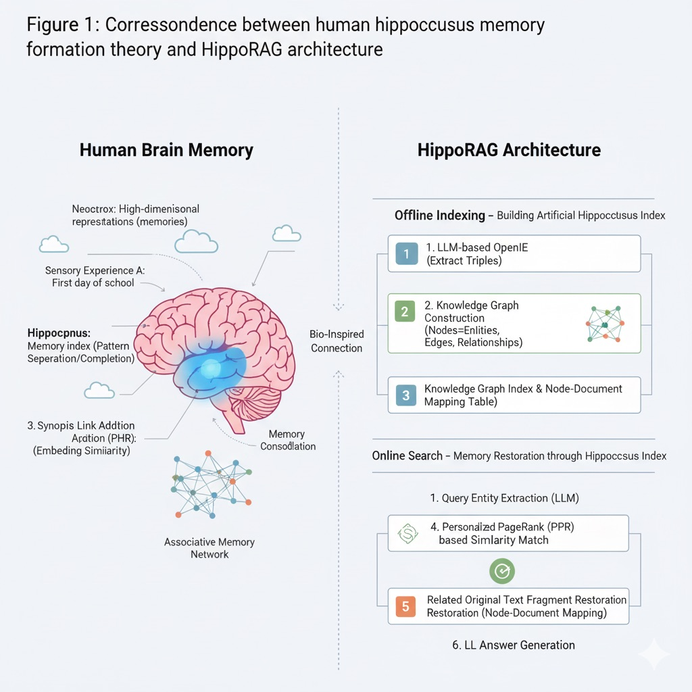
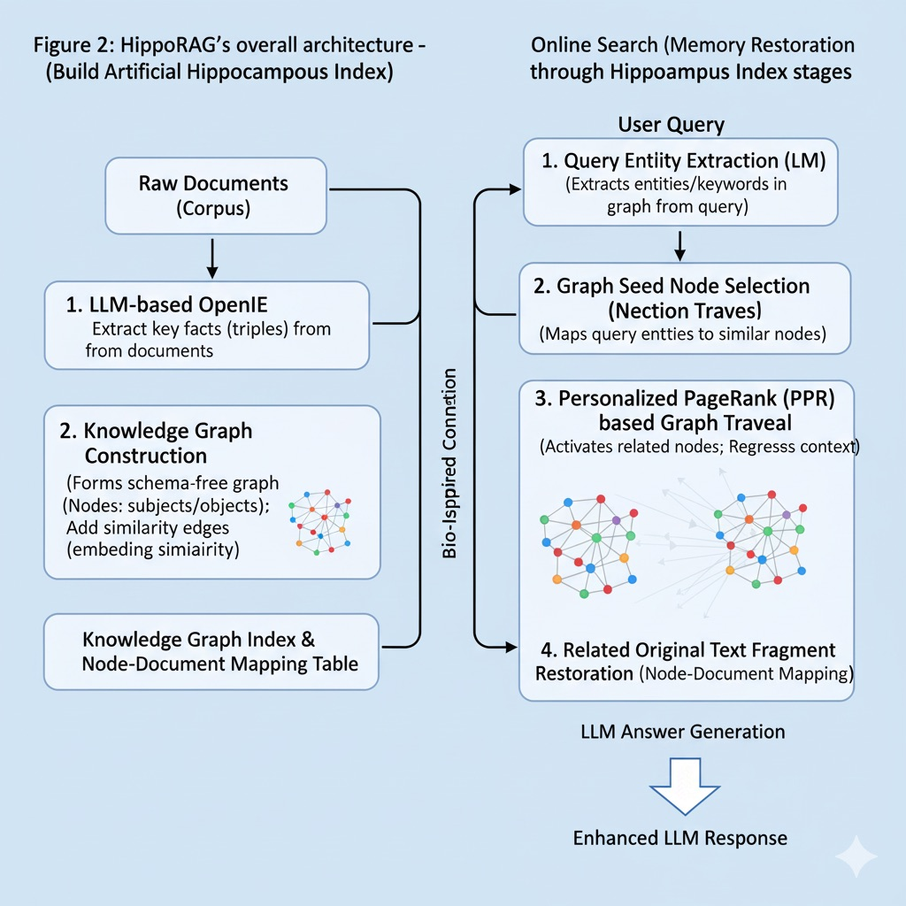
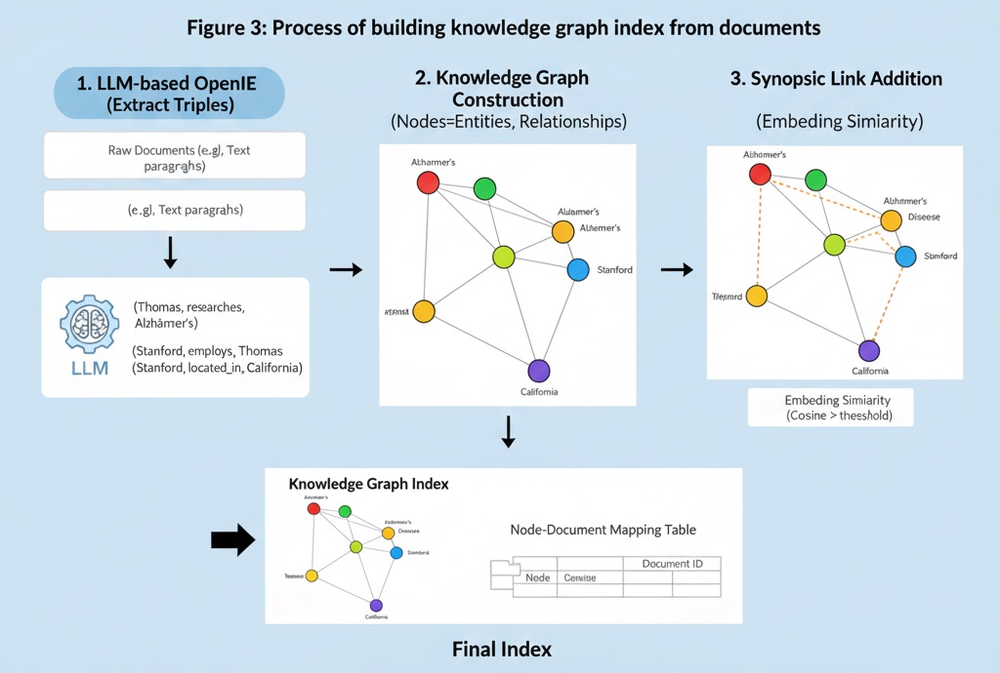
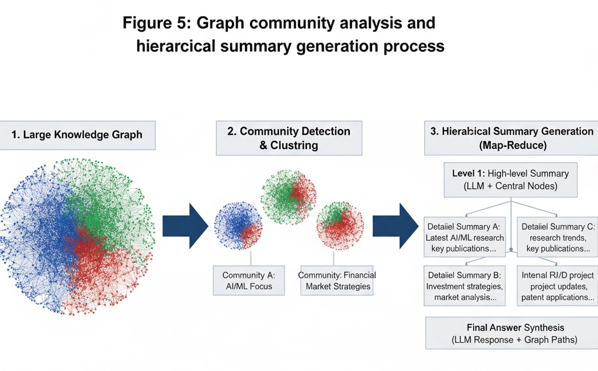
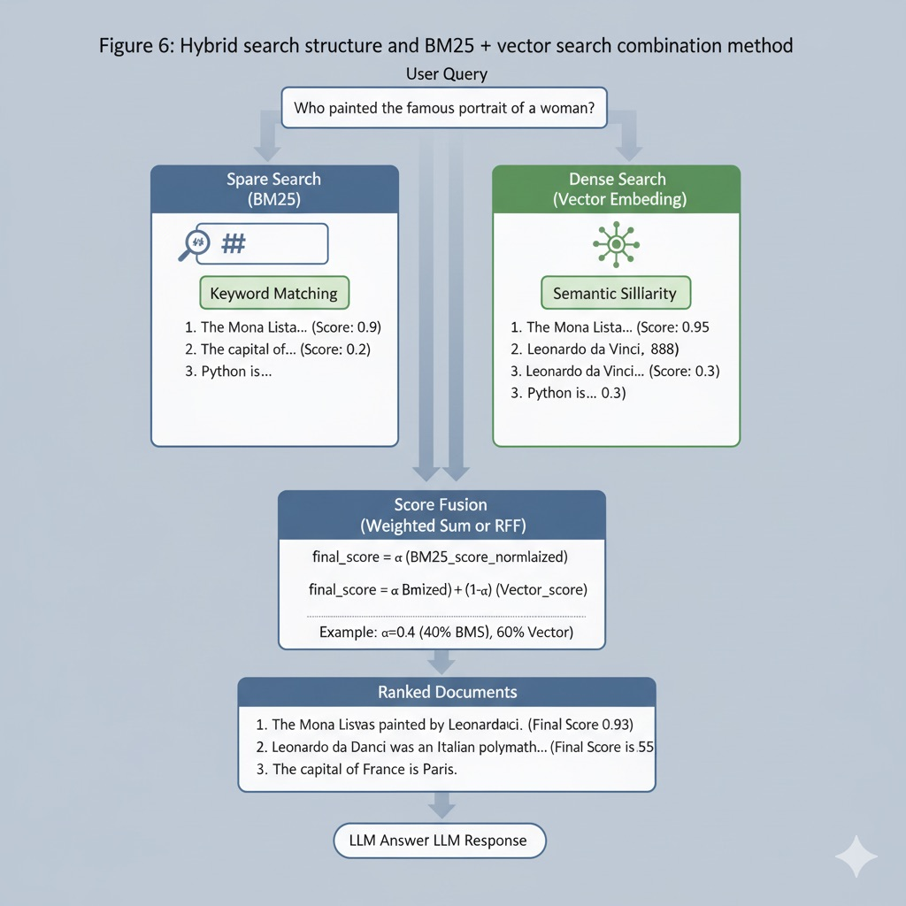
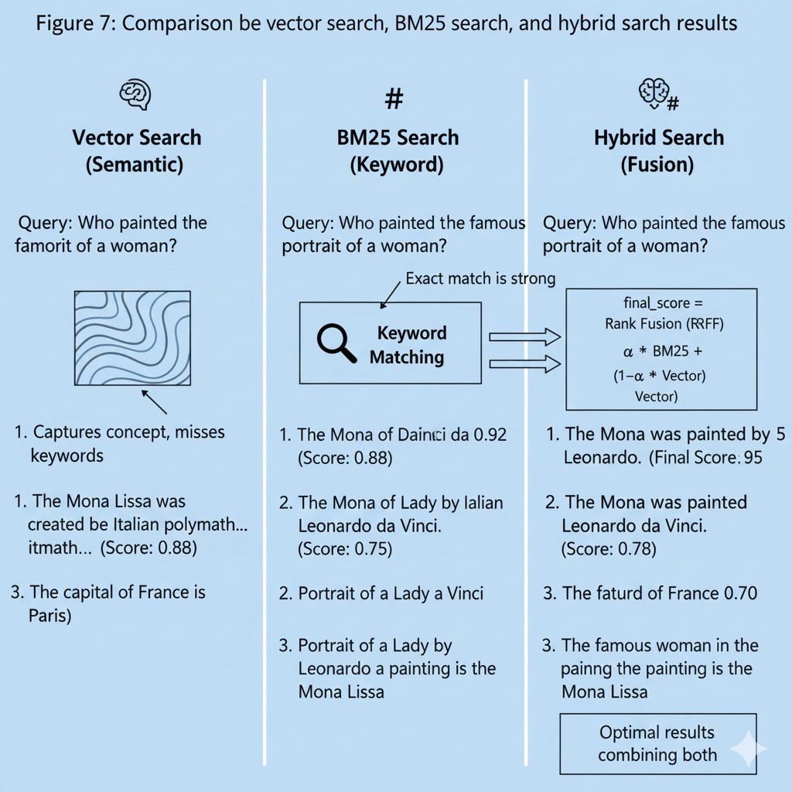
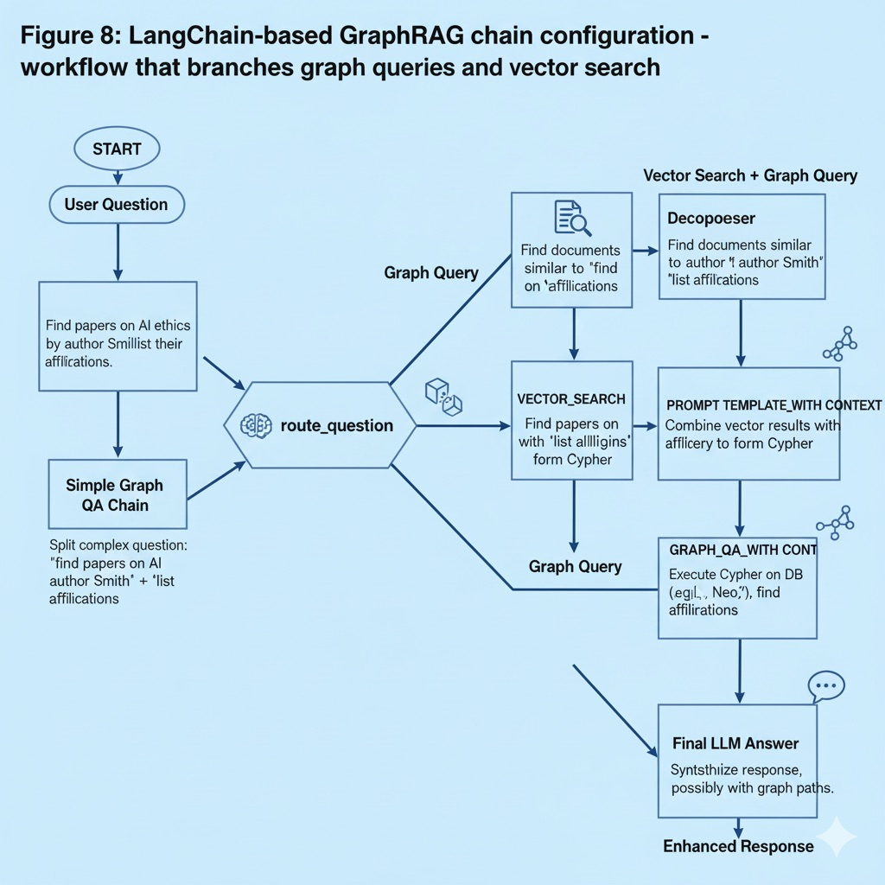

Week 9: Advanced RAG Architectures#
This week covers advanced architectures for Retrieval-Augmented Generation (RAG) techniques. The vector RAG approach we’ve learned so far embeds documents as vectors and retrieves similar vectors for queries to pass to LLMs. While this is a powerful method for overcoming long context limitations and utilizing external knowledge bases, it still shows limitations in multi-document knowledge integration and relational reasoning. This lecture explores next-generation RAG architectures that have emerged to overcome these limitations, learning their structural characteristics and practical implementation methods. We focus particularly on HippoRAG, GraphRAG, and hybrid search techniques, naturally connecting them with previously learned concepts like LangChain utilization, vector databases, FlashAttention, and PEFT.
1. The Need for RAG Evolution: Long-term Memory and Multi-context Integration#
Traditional RAG systems (vector-based) receive user questions, search for relevant documents using embedding similarity, and provide the found documents as context to LLMs for answer generation. While this vector RAG approach enabled LLMs to dynamically utilize external knowledge not learned during pre-training, it revealed the following limitations:
Difficulty in Multi-hop Reasoning: When information needed for answers is distributed across multiple documents, it’s difficult to find all relevant pieces through vector search alone. Previous solutions like Iterative RAG (e.g., IRCoT) repeat query-generation multiple times, but this is inefficient and still causes omissions.
Lack of Relational Context: Vector embeddings capture semantic similarity well but cannot express explicit relationships between documents (e.g., A is part of B, cause-effect relationships). Therefore, it’s difficult to handle cases requiring knowledge graphs that express relationships or keyword-based exact matching.
Absence of Long-term Memory Management: Current RAG systems infinitely accumulate new documents in existing vector databases, leading to problems of unnecessary information accumulation or noise increase over time. Unlike human memory, they lack functions for forgetting old information or consolidation.
For these reasons, attempts have been made to develop RAG closer to human brain’s long-term memory systems. That is, evolved RAG architectures with functions like structured indexing (e.g., knowledge graphs), intentional forgetting (removing old information), and knowledge integration (summarization and relationship extraction) have emerged. The techniques we’ll cover in these sections—HippoRAG, GraphRAG, hybrid search—were developed in this context. These advanced RAG structures can work complementarily with efficient Transformer techniques like FlashAttention (long context processing) or PEFT-based fine-tuning (knowledge injection)—for example, using RAG to bring external knowledge while FlashAttention efficiently processes long contexts, or PEFT fine-tuning LLMs to better utilize RAG-integrated knowledge.
Checkpoint Questions#
Why do basic vector RAG systems have limitations in knowledge integration across multiple documents (multi-hop queries)? What approaches have been attempted to supplement these limitations?
Compared to human brain’s long-term memory functions, what memory management functions are lacking in existing RAG structures? (e.g., forgetting, consolidation)
How can techniques like FlashAttention or PEFT be combined with RAG? What benefits can be gained from such combinations?
2. HippoRAG: Biologically Inspired Long-term Memory Architecture#
HippoRAG is an advanced RAG framework inspired by human hippocampus memory formation theory. This approach was presented at NeurIPS 2024 and focuses on improving LLMs’ long-term knowledge integration capabilities by mimicking hippocampus-neocortex interactions. To understand HippoRAG’s operation, let’s first briefly examine the hippocampus-based memory indexing theory that inspired it:
 Figure 1: Correspondence between human hippocampus memory formation theory and HippoRAG architecture
Neocortex: Stores sensory experiences as high-dimensional representations through abstraction—in human brains, actual memory content is distributed and stored across multiple cortical areas.
Hippocampus: Acts as memory index—separates individual experiences into unique patterns (pattern separation) and restores entire memories from partial cues (pattern completion). The hippocampus updates its own index when new experiences arrive and enables continuous learning by not overwriting existing neocortical memories.
Para-hippocampal region (PHR): Connects neocortex and hippocampus—forms similarity links when connecting similar concepts to send to hippocampus.
HippoRAG applies this theory to RAG. HippoRAG operates in two stages: offline indexing and online search:
 Figure 2: HippoRAG’s overall architecture - offline indexing and online search stages
(1) Offline Indexing – Building Artificial Hippocampus Index: This process converts original documents into knowledge graph form to create a kind of “hippocampus index” in advance. The specific procedure is as follows:
LLM-based OpenIE: Uses large-scale LLMs (e.g., GPT-4) to extract key facts (triples) from each document. For example, from the sentence “Professor Thomas researches Alzheimer’s at Stanford,” it extracts triples like (Thomas, researches, Alzheimer’s), (Stanford, employs, Thomas). This corresponds to the process where human neocortex processes experiences and decomposes them into elements. Through this Open Information Extraction, document content is stored as structured information pieces rather than dense vectors, so each fact is separately stored (pattern separation) without mixing with others.
Knowledge Graph Construction: Forms a schema-free knowledge graph using subjects/objects of all extracted triples as nodes and relationships as edges. This graph becomes a network-form index that integrates knowledge from all documents.
Synopsis Link Addition (PHR role): Corresponds to the PHR part, adding additional edges that connect synonyms or similar concepts. For this, embedding similarity is calculated for each node (concept), and synonym edges are added between node pairs with cosine similarity above threshold. For example, connections are formed between “Alzheimer’s” and “Alzheimer’s disease” nodes so that when one is activated during search, the other is also activated. This is similar to PHR’s function of linking similar memories before sending to hippocampus.
Node-Document Mapping Storage: Stores a mapping table recording which original text paragraphs each node (concept) in the graph appeared in. This is information needed to restore search results back to actual original text paragraphs later.
The constructed knowledge graph index corresponds to the associative memory network built by human brain’s hippocampus. This index can be more memory efficient than traditional vector databases—instead of storing entire documents as vectors, it stores only key concept nodes, significantly saving storage space (research reports about 25% storage space reduction). Also, since relationships between concepts are explicitly connected, it shows strengths in connection-based reasoning.
 Figure 3: Process of building knowledge graph index from documents
(2) Online Search – Memory Restoration through Hippocampus Index: When a user query arrives, HippoRAG finds relevant information by mimicking the process of restoring entire memories from partial cues. The steps are as follows:
Query Entity Extraction (Neocortex role): Calls LLM once to extract important entity names or keywords appearing in user questions. For example, if the question is “Who is the Stanford professor researching Alzheimer’s?”, extraction results in a set like {Stanford, Alzheimer’s}.
Graph Seed Node Selection: Each extracted query entity is embedded, and the most similar nodes within the graph are found. In the above example, the node closest to Stanford and Alzheimer’s would probably be Thomas Südhof. These selected nodes act as starting points (partial cues) for hippocampus search.
Personalized PageRank (PPR) based Graph Traversal: This is HippoRAG’s core step. Personalized PageRank algorithm is performed on the graph starting from selected seed nodes. PPR performs probabilistic “diffusion” from seed nodes to adjacent nodes, with high probability concentrated on nodes near seeds. This corresponds to hippocampus activating entire related memories from partial cues (Pattern Completion). PPR results give weights to related nodes in the graph, indicating how deeply related each concept is to current query.
Related Original Text Fragment Restoration: Top nodes obtained from PPR are mapped back to original text paragraphs using node-document mapping table. For each paragraph, PPR scores of nodes appearing in it are summed to determine final ranking. The most relevant paragraphs are finally passed to LLM for answer generation.
HippoRAG achieves multi-hop information connection in a single search through this process. For example, in the previous Stanford/Alzheimer’s example, traditional vector RAG would need two-step search—searching with “Stanford” once and then finding “Thomas Südhof” information based on results—but HippoRAG finds “Stanford→Thomas Südhof←Alzheimer’s” connection at once through the graph. According to experimental results, HippoRAG showed up to 20% higher accuracy than existing SOTA in QA requiring 2-step or more knowledge integration, and achieved 10-20x cheaper and 6-13x faster performance compared to iterative search techniques like IRCoT.
To use an analogy, if vector RAG views each document as an island and selects a few islands similar to questions, HippoRAG pre-places bridges connecting documents and finds destination information by moving along bridges starting from islands with question cues. Through this Neuro-symbolic combination, HippoRAG gives LLMs the ability to reconstruct related entire contexts from partial information, like humans do.
Checkpoint Questions#
In HippoRAG’s offline indexing stage, why is a knowledge graph built instead of vector embeddings? What benefits does this provide?
What role does Personalized PageRank (PPR) algorithm play in HippoRAG, and how does this improve multi-document reasoning?
Compared to existing vector RAG or IRCoT, what improvements in response accuracy or speed have been reported for HippoRAG?
3. GraphRAG: Knowledge Graph-based Retrieval-Augmented Generation#
GraphRAG is a graph-enhanced RAG architecture proposed by Microsoft and others, systematically utilizing topic-wise associations of large-scale documents using knowledge graphs. Conceptually similar to HippoRAG we examined earlier in explicitly modeling inter-document relationships, it differs in implementation and application aspects. GraphRAG’s goal is to convert unstructured text into structured knowledge forms to improve query-answer accuracy and interpretability.
 Figure 4: GraphRAG’s overall pipeline structure
Figure 4: GraphRAG’s overall pipeline structure
GraphRAG’s typical workflow is summarized as follows:
Document → Text Chunk Segmentation: Large documents are segmented into fixed lengths. (Too long chunks cause information loss, too short cause search inaccuracy and cost problems, so appropriate chunk size must be selected.)
Entity and Relationship Extraction: Each chunk is processed using LLM to extract key entities (noun phrases), relationships (verb/preposition phrases), facts (claims, numbers), etc. Brief descriptions are attached to each element extracted by LLM to improve interpretability. (e.g., when extracting “NeoChip” company entity, generate descriptions like “public company specializing in low-power processors”.)
Knowledge Graph Construction: Creates weighted knowledge graph using extracted entities as nodes and relationships as edges. If identical relationships appear in multiple documents, edge weights are increased to indicate duplicate importance. Also, duplicate entities or facts are clustered and summarized to make the graph concise.
Graph Community Analysis: Community detection algorithms (e.g., Leiden algorithm) are applied to completed graphs to identify topic clusters where nodes are densely connected. Through this hierarchical clustering, massive knowledge graphs can be divided into topic-wise subgraphs, useful for subsequent summarization and search scope reduction.
Community-wise Summary Generation: For each found community (topic), summaries representing their content are generated. Central nodes (important entities with high connectivity) in that topic are prioritized to maximize semantic density. When graph hierarchy has multiple levels, recursive summarization is performed where upper levels include lower summaries, obtaining multi-resolution topic summary information.
Hierarchical Query Answering: When user questions arrive, community summaries matching questions are first selected (mixing multiple topic summaries if needed), input to LLM to generate first responses (Map stage). Then usefulness scores of each response are evaluated, and top responses are gathered again to generate final answers (Reduce stage). This map-reduce approach constructs answers hierarchically even for massive document groups, improving overall accuracy and consistency.
Through the above GraphRAG pipeline, explainable and topic-structured search becomes possible compared to simple embedding-based search. For example, processing thousands of internal corporate reports with GraphRAG generates field-wise knowledge graphs + summaries, so when users ask questions like “summarize AI research achievements in the last 3 years”, fast and accurate answers can be generated using relevant community summaries. Also, reliability can be improved by presenting graph paths or summaries as answer evidence.
 Figure 5: Graph community analysis and hierarchical summary generation process
In Microsoft’s published GraphRAG case, they showed examples of performing query-answering by structuring Wikipedia novel “Christmas Carol” through GraphRAG pipeline. This demonstrated higher response accuracy (up to 99% precision) than traditional RAG and showed that understandable reasoning processes (knowledge graph paths, summary content) can be provided to users even in complex large-scale datasets.
GraphRAG is conceptually similar to HippoRAG but in implementation, it’s sometimes provided in Knowledge Graph + vector DB combination form through open source tools (e.g., Microsoft’s GraphRAG library). Also, GraphRAG has high pre-construction costs due to many data engineering aspects (graph generation, community analysis, etc.), but once constructed graphs are utilized, query-answering stage costs are reduced.
Checkpoint Questions#
What is the purpose of introducing knowledge graphs and community detection in GraphRAG pipeline? Explain how this structuring contributes to query-answering.
What is GraphRAG’s map-reduce query-answering strategy, and why is this approach effective for large-scale document collections?
Both HippoRAG and GraphRAG use graphs, but what differences exist in implementation methods or application scope? For example, compare the two techniques in terms of real-time dynamic updates.
4. Hybrid Search: Combination of Keywords and Embeddings#
Hybrid search is an approach that combines traditional sparse (Lexical) search and dense (Vector) search to utilize advantages of both methods. While HippoRAG or GraphRAG we covered earlier focused on knowledge structuring, hybrid search is an improvement at the search algorithm level, simultaneously utilizing accurate keyword matching capabilities and semantic similarity reasoning capabilities.
 Figure 6: Hybrid search structure and BM25 + vector search combination method
Traditionally, keyword-based ranking like BM25 is strong in exact term matching between queries and documents, accurately finding typos, abbreviations, names, etc. However, it easily misses cases where expressions differ even with same meaning and doesn’t reflect contextual meaning. Conversely, embedding-based vector search captures semantic similarity of sentences well, finding related results even with different expressions, but may miss exact keywords (e.g., code snippets, proper nouns, etc.).
Hybrid search performs these two in parallel then integrates (score fusion) results. For example, in OpenAI Embedding + BM25 combination hybrid search, BM25 scores and cosine similarity scores are calculated for one query, then final ranking is determined through weighted summation or Rank-Fusion techniques. For simple weighted sum:
final_score = α * (BM25_score_normalized) + (1-α) * (Vector_score)
This can be adjusted. (α is importance ratio of two searches) Or techniques like Reciprocal Rank Fusion (RRF) that sum scores based on ranks in each result list are widely used. RRF can mix two results without being affected by score distribution differences of each search method, so it’s frequently used.
LangChain provides EnsembleRetriever etc. to easily implement such hybrid search. The following is example code for configuring BM25 + vector embedding hybrid retriever using LangChain:
from langchain.retrievers import BM25Retriever, EnsembleRetriever
from langchain.embeddings.openai import OpenAIEmbeddings
from langchain.vectorstores import FAISS
from langchain.schema import Document
# 1. Document list (example sentences)
texts = [
"The capital of France is Paris.",
"Machine learning enables computers to learn from data.",
"The Mona Lisa was painted by Leonardo da Vinci.",
"Python is a popular programming language for AI."
]
documents = [Document(page_content=text) for text in texts]
# 2. Create BM25-based Retriever
bm25_retriever = BM25Retriever.from_documents(documents)
bm25_retriever.k = 2 # Use top 2 results
# 3. Create vector-based Retriever (OpenAI embedding + FAISS)
embeddings = OpenAIEmbeddings() # Embedding model (e.g., text-embedding-ada-002)
vector_store = FAISS.from_documents(documents, embeddings)
vector_retriever = vector_store.as_retriever(search_kwargs={"k": 2})
# 4. Create Ensemble (hybrid) Retriever (BM25 40%, vector 60% weight)
hybrid_retriever = EnsembleRetriever(
retrievers=[bm25_retriever, vector_retriever],
weights=[0.4, 0.6]
)
# 5. Execute example query
query = "Who painted the famous portrait of a woman?"
results = hybrid_retriever.get_relevant_documents(query)
for idx, doc in enumerate(results, start=1):
print(f"Result {idx}: {doc.page_content}")
Execution Result:
Result 1: The Mona Lisa was painted by Leonardo da Vinci.
Result 2: The capital of France is Paris.
As seen in the above result, for query “Who painted the famous portrait of a woman?”, hybrid search finds Mona Lisa related sentence as 1st priority. Pure vector search alone might miss without exact word “Mona Lisa”, and BM25 alone might be inaccurate depending on keyword matching like “portrait”. Hybrid method reflects both keyword matching (Mona Lisa→portrait matching) and semantic similarity (famous woman portrait→Mona Lisa painting meaning connection), so optimal results are obtained.
 Figure 7: Comparison of vector search, BM25 search, and hybrid search results
Hybrid search is particularly useful in domains where technical terms, code, or proper nouns are important. For example, in medical documents, items difficult to catch with vectors like abbreviations (“BP” vs “Blood Pressure”), or cases where literal matching is meaningful like source code queries, BM25 plays a complementary role. As an actual case, Stack Overflow abandoned existing TF-IDF based search and switched to embedding + keyword hybrid, greatly improving search quality by not missing keyword matching in code-including questions while finding semantically related answers.
Of course, hybrid search also has considerations. Since two searches are performed in parallel, latency may increase, and tuning work is needed for score combination/normalization. However, most vector databases provide hybrid functions (e.g., Elastic, Pinecone, Weaviate, etc.) or API support by default, so implementation difficulty is decreasing.
In summary, hybrid search balances “finding exactly what’s asked” and “understanding intent and finding”. This maximizes Retriever stage performance of RAG systems, improving final answer quality by providing better context to LLMs.
Checkpoint Questions#
In hybrid search, what types of information do BM25 and embedding search find well respectively? Why do synergistic effects occur when combining the two methods?
When implementing hybrid search, different search scores must be combined. How do normalization or Rank Fusion techniques solve this combination problem?
If you were to build a RAG system, explain with examples in what situations adopting hybrid search would be advantageous over pure vector search.
5. GraphRAG Implementation Practice using LangChain#
The advanced RAG techniques introduced earlier may seem difficult to implement, but fortunately, frameworks like LangChain allow relatively easy practice of some functions. Particularly for GraphRAG, LangChain has modules supporting graph query chains and graph state machines. This section introduces methods for implementing simple GraphRAG workflows using LangChain.
First, here’s a basic graph query-answering example using LangChain’s GraphQAChain. This chain connects graph databases with LLMs, performs queries on graphs, and lets LLMs answer in natural language.
from langchain_experimental.graph_transformers import LLMGraphTransformer
from langchain.chains import GraphQAChain
from langchain_community.graphs.networkx_graph import NetworkxEntityGraph
from langchain_openai import OpenAI
# 1. Example text and LLM preparation
text = "Marie Curie was a physicist. Marie Curie won a Nobel Prize. Marie Curie worked in Paris."
llm = OpenAI(model_name='gpt-3.5-turbo', temperature=0) # OpenAI LLM example
# 2. Convert text to graph triples using LLM Graph Transformer
documents = [text]
graph_transformer = LLMGraphTransformer(llm=llm)
graph_docs = graph_transformer.convert_to_graph_documents(documents)
# 3. Create NetworkX graph object and add nodes/edges
graph = NetworkxEntityGraph()
for node in graph_docs.nodes:
graph.add_node(node.id)
for edge in graph_docs.relationships:
graph._graph.add_edge(edge.source.id, edge.target.id, relation=edge.type)
# 4. Create GraphQAChain (connect graph and LLM)
graph_qa_chain = GraphQAChain.from_llm(llm=llm, graph=graph, verbose=True)
# 5. Execute query
query = "What did Marie Curie win?"
result = graph_qa_chain.run(query)
print(result)
The above code extracts a simple knowledge graph from one paragraph using LLM (convert_to_graph_documents), converts it to NetworkX graph, then performs query-answering through GraphQAChain. Execution result for example query “What did Marie Curie win?” could be:
Marie Curie won a Nobel Prize.
LangChain’s GraphQAChain internally goes through steps of query analysis → Cypher (graph query language) generation → graph DB query → result synthesis → LLM answer. Thanks to this, users can get answers utilizing graph information with natural language queries only without directly writing complex Cypher syntax or graph traversal logic. This can be seen as an example where LangChain abstracts GraphRAG’s online search stage.
Also, LangChain allows graph+vector mixed chain configuration. For example, GraphCypherQAChain is a hybrid chain that uses vector embeddings to convert queries to graph queries, executes Cypher in Neo4j etc., then combines with additional embedding search. For complex examples, using Microsoft’s LangGraph extension, branching workflows can be built as follows:
 Figure 8: LangChain-based GraphRAG chain configuration - workflow that branches graph queries and vector search
The above figure is a simplified representation of GraphRAG example workflow published by Neo4j. When questions arrive at START node, route_question function analyzes question content and branches to right branch for vector search if needed, or left branch for simple graph queries. Right branch first has Decomposer split complex questions into two parts (e.g., “find papers” + “get authors of those papers”). Then VECTOR_SEARCH node processes first part to find similar documents, and PROMPT_TEMPLATE_WITH_CONTEXT node combines results with second graph query part to generate Cypher query. Finally, GRAPH_QA_WITH_CONTEXT node finds answers in graph DB and provides final response through LLM. Left branch performs traditional GraphQA process.
The lesson gained from such LangChain-based implementation is that advanced RAG architectures can also be sufficiently modularized and configured. That is, Retrievers can be configured in multiple stages or Chains can be branched/merged to reproduce human-designed logic in HippoRAG or GraphRAG. For example, to implement HippoRAG with LangChain, instead of document embedding, LLM triple extraction + graph build stage and NER + PPR graph traversal stage during queries can be made into Python functions and combined into Chain. Actually, HippoRAG’s open code also implements these procedures in Python.
In summary, LangChain is an excellent tool for easily practicing advanced RAG ideas. Using it, learners can directly create advanced RAG pipelines, observe how each stage affects results, and gain deep understanding. Furthermore, when building their own RAG systems in enterprise environments, LangChain’s modules can be utilized to quickly create prototypes.
Checkpoint Questions#
How does LangChain’s GraphQAChain convert natural language questions to graph queries and generate answers? Reason through internal operation step by step.
In the example workflow above, what criteria does question branching (route) logic use to select graph vs vector paths? For example, what factors determine when vector search is needed for incoming questions?
Assuming you apply HippoRAG/GraphRAG to your domain data, what modules (chains, retrievers, etc.) should be utilized to implement this with LangChain? (e.g., when applying GraphRAG to research paper data)
6. Advanced RAG Application Cases and Conclusion#
Finally, we briefly examine RAG architecture cases in actual large-scale systems and conclude. Recently in industry, ultra-large scale RAG systems are operating that must process tens of millions of tokens daily while maintaining response latency within 100ms. For this, the techniques we covered earlier are comprehensively utilized. For example:
Large-scale Vector DB + Hybrid Search: Store hundreds of millions of documents as vector embeddings, but apply BM25 etc. keyword filters in first-stage candidate search to reduce search space, then use embedding similarity search + RRF for precise ranking. This catches both search accuracy and latency.
FlashAttention-based Long Context Processing: When putting retrieved document fragments into LLMs for answers, sometimes tens of thousands of tokens are input in one prompt. In such cases, LLM servers with memory optimization techniques like FlashAttention are used to operate stably even in large-scale contexts.
Continuous Learning and Forgetting: In situations where new documents are added daily, applying HippoRAG approach, triples of new documents are periodically extracted to update knowledge graph index, and memory management policies are applied that remove old information from graphs or lower weights of edges with decreased importance. This maintains both update efficiency and search quality.
The techniques we examined—HippoRAG, GraphRAG, Hybrid Search—serve as core elements of such large-scale systems, each responsible for long-term memory, relational reasoning, and search precision. Learners can gain deep insights by going beyond theoretical understanding of these architectures to directly implement and tune them through practice and projects.
Aspect |
HippoRAG |
GraphRAG |
Hybrid Search |
|---|---|---|---|
Core Approach |
Biologically-inspired memory indexing using hippocampus theory |
Knowledge graph construction with community detection |
Combination of sparse (BM25) and dense (vector) search |
Data Structure |
Knowledge graph with synopsis links (PHR connections) |
Hierarchical knowledge graph with community clusters |
Vector embeddings + inverted index |
Indexing Method |
LLM-based OpenIE → Graph construction → Synopsis linking |
Entity/relationship extraction → Graph building → Community analysis |
Document embedding + keyword indexing |
Search Strategy |
Query entity extraction → PPR graph traversal → Memory restoration |
Community summary selection → Map-reduce answering |
Parallel BM25 + vector search → Score fusion |
Memory Management |
Pattern separation and completion (like hippocampus) |
Hierarchical summarization and clustering |
Static index with periodic updates |
Multi-hop Reasoning |
✅ Excellent (single-step PPR traversal) |
✅ Good (community-based reasoning) |
❌ Limited (requires multiple queries) |
Exact Match Capability |
⚠️ Moderate (depends on entity extraction) |
⚠️ Moderate (depends on graph structure) |
✅ Excellent (BM25 component) |
Semantic Understanding |
✅ Good (through synopsis links and PPR) |
✅ Excellent (LLM-based extraction and summarization) |
✅ Good (vector component) |
Storage Efficiency |
✅ High (25% reduction reported) |
❌ Low (requires extensive graph storage) |
⚠️ Moderate (dual indexing overhead) |
Query Speed |
✅ Fast (6-13x faster than iterative methods) |
⚠️ Moderate (depends on graph size) |
⚠️ Moderate (parallel search overhead) |
Setup Complexity |
⚠️ Moderate (requires graph construction) |
❌ High (complex pipeline with community detection) |
✅ Low (straightforward implementation) |
Real-time Updates |
⚠️ Moderate (requires graph updates) |
❌ Difficult (expensive re-clustering) |
✅ Easy (independent index updates) |
Interpretability |
✅ Good (graph paths and node activations) |
✅ Excellent (community summaries and graph evidence) |
⚠️ Limited (score combination only) |
Best Use Cases |
Multi-document reasoning, long-term memory systems, academic research |
Large-scale document analysis, enterprise knowledge bases, topic discovery |
Technical documentation, code search, mixed content types |
Typical Domains |
Scientific literature, legal documents, research papers |
Corporate reports, Wikipedia-scale content, news archives |
Stack Overflow, medical records, software documentation |
Integration with LLMs |
Direct context restoration for answer generation |
Hierarchical prompting with community summaries |
Enhanced retrieval for standard RAG pipelines |
Scalability |
✅ Good (efficient graph operations) |
⚠️ Moderate (community detection bottleneck) |
✅ Good (parallel processing) |
Accuracy Improvement |
20% higher for multi-hop QA |
Up to 99% precision reported |
Significant improvement over single-method approaches |
Completing this week, you will have learned components and operation principles of latest RAG architectures, which becomes the foundation for upcoming LangChain-based RAG practice. For example, in the next step, you will perform tasks of building GraphRAG for actual internal wiki documents and benchmarking and improving search performance. Through such practice, I hope you experience how concepts learned in this lecture are applied to real systems.
Checkpoint Questions#
In large-scale enterprise RAG systems, what techniques are combined to simultaneously satisfy response latency and search accuracy? Give specific examples.
When applying RAG to continuously updated knowledge bases, how can HippoRAG’s ideas be utilized? (e.g., new information integration, old information processing)
Using advanced RAG concepts learned in this lecture, if you were to design your own RAG pipeline, what structure would you conceive? List main stages and techniques to use.
References#
Chen, J., Lin, H., Han, X., & Sun, L. (2024). HippoRAG: Neurobiologically Inspired Long-Term Memory for Large Language Models. arXiv preprint arXiv:2405.14831.
Microsoft Research (2024). GraphRAG: Transforming Unstructured Text into Explainable, Queryable Intelligence using Knowledge Graph-Enhanced RAG.
Sharma, T. (2024). HippoRAG: Redefining AI Retrieval emulating the Hippocampus. Medium.
Sharma, T. (2024). Microsoft GraphRAG: Transforming Unstructured Text into Explainable, Queryable Intelligence using Knowledge Graph-Enhanced RAG. Medium.
Superlinked (2024). Optimizing RAG with Hybrid Search & Reranking. VectorHub.
Neo4j (2024). Create a Neo4j GraphRAG Workflow Using LangChain and LangGraph. Neo4j Developer Blog.
Nixie Search (2024). Search Overview Documentation. GitHub.
S, Suruthi (2024). Exploring HippoRAG: Neurobiologically Inspired Long-Term Memory for Large Language Models. Medium.
Shrsv (2024). About HippoRAG. DEV Community.
VectorHub (2024). Hybrid Search & Rerank RAG Documentation. GitHub.